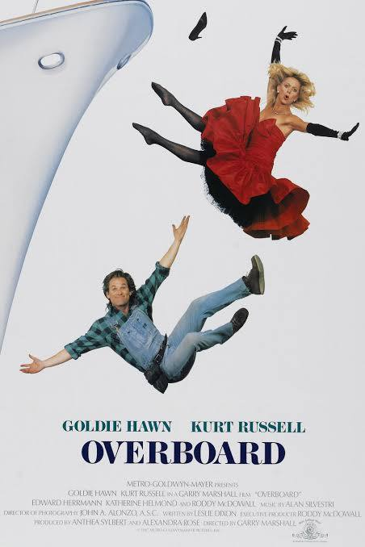
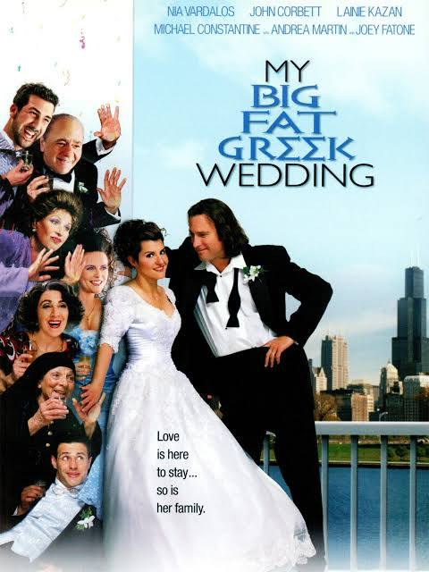
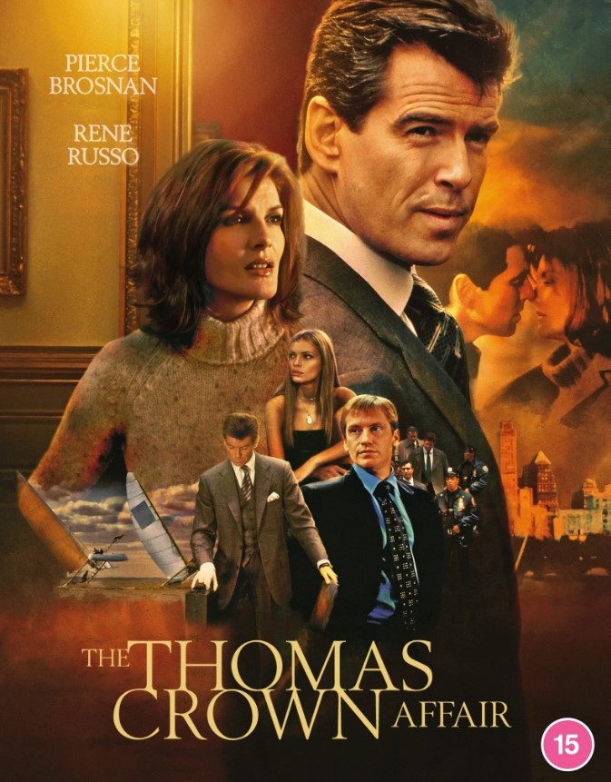
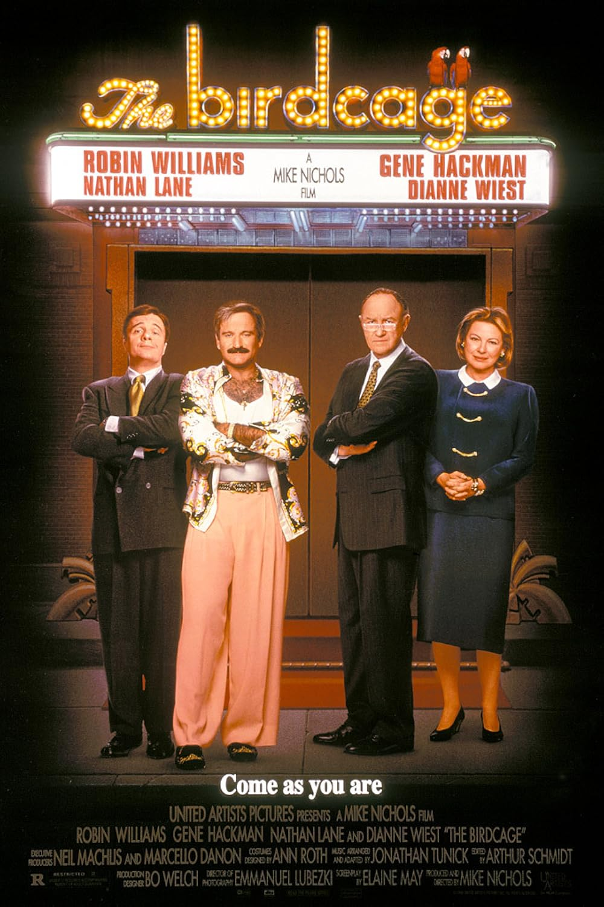
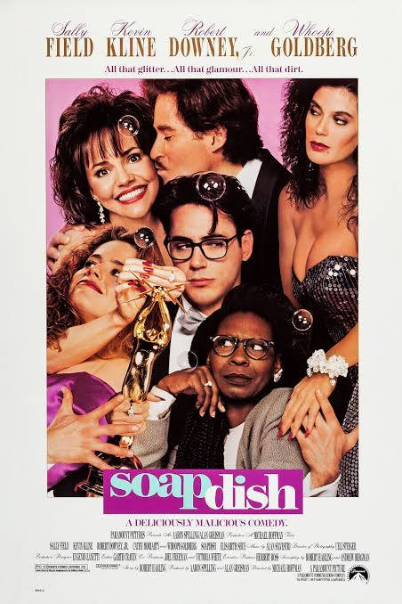
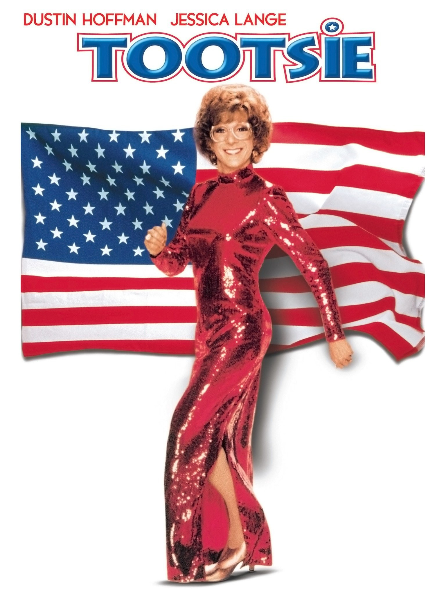
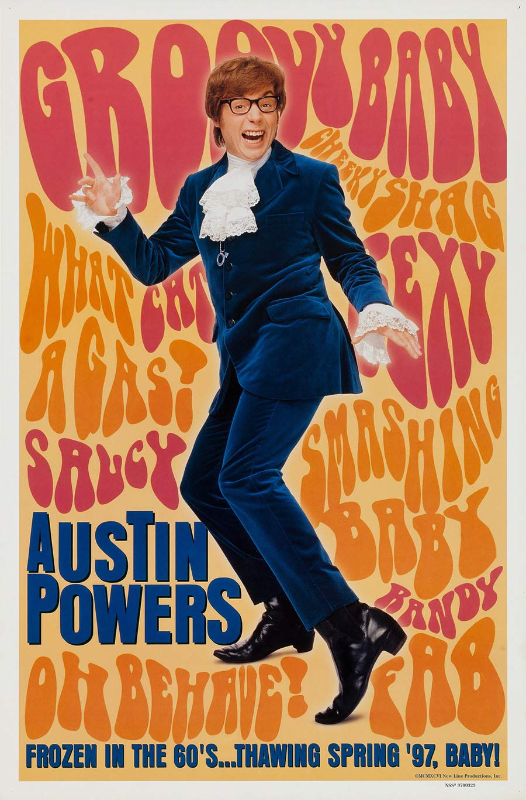
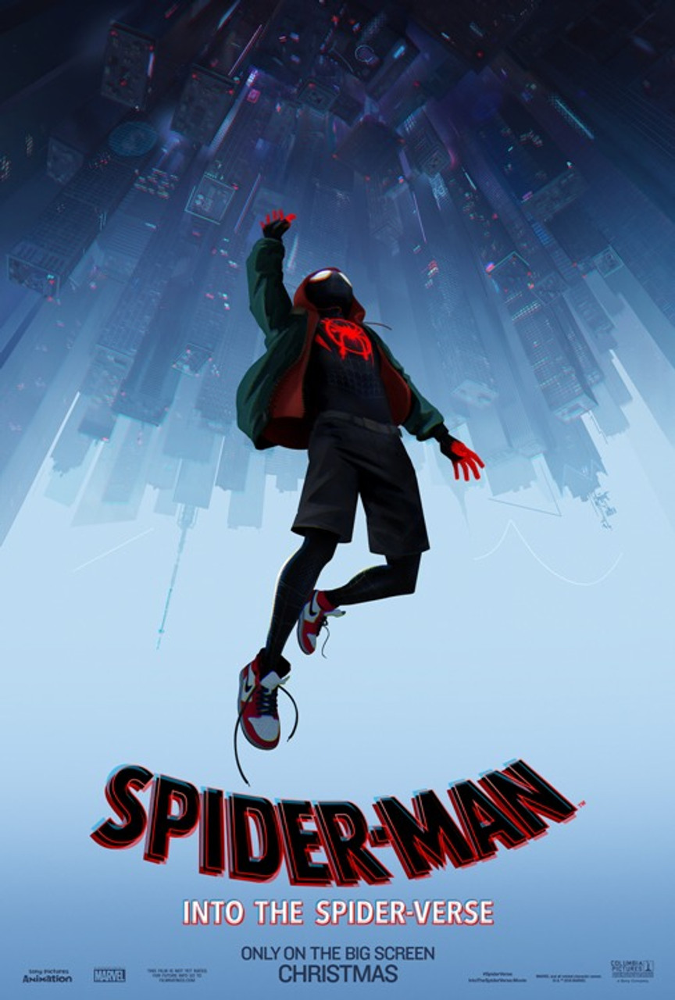

Overboard (1987)
Featuring Kurt Russell and Goldie Hawn, Overboard is a Rom Com about a rich woman who loses her memory after falling overboard from her yacht. In the hospital, she is picked up by a carpenter that she had been rude to and scammed at the beginning of the movie. He tricks her into thinking she's the mother of his children. Yes the premise of the movie is utterly messed up.
Love Actually (2003)

A christmas movie, taking place in London, England, that shows 8 different stories about all types of love.
My Big Fat Greek Wedding (2002)
A Greek woman falls in love with a Non-Greek man and has to prove to her family that he is worth it and worth marrying.
The Thomas Crown Affair (1999)
Rich playboy, Thomas Crown, steals a Monet painting from the Metropolitan Museum of Art. Catherine Banning, an insurance investigator, suspects him after he lends the museum a Pissarro painting in place of the Monet. During her investigation she is seduced by Thomas Crown, only for him to fall for her during his plan to misdirect her.
The Birdcage (1996)
A gay couple runs a drag show club in Miami Florida. Their son meets a woman in college and is planning to marry her. The problem is that her father is a conservative Senator that is pretty adament about his distaste for minorities. The club owners decide to put on a front, pretending to be a normal heterosexual couple so that the woman's parents will approve of the marriage.
Soapdish (1991)
An internationally popular Soap Opera turns out to have an even more dramatic story than the show's premise.
Tootsie (1982)
An unsuccessful actor dresses up as a woman to get into a hospital soap opera.
Atlantis: The Lost Empire (2001)

Milo Thatch joins an expedition of explorers to find the Lost City of Atlantis.
Austin Powers: Internationl Man of Mystery (1997)
Secret agent Austin Powers is released from a cryogenic pod to fight Dr. Evil
Spider-Man: Into the Spiderverse (2018)
Miles Morales is bitten by a radioactive spider and becomes the next Spider Man of his Universe. 5 other spider people from 5 other dimensions are transported to his universe and he must work with them to shut down the experiment that is opening these dimensional portals to prevent his and others' universes from being destroyed.
Spider-Man: Across the Spiderverse (2023)

Miles Morales teams up with a new team of spider people to solve more dimensional shenanigans only for them to turn on him as a new threat presents itself.
The Road to El Dorado (2000)

Two thieves discover a map to El Dorado and make a journey to the city of gold.